Física III
Table of Contents
Eletricidade e magnetismo - visão geral
A área da física que trata dos fundamentos dos fenômenos elétricos e magnéticos, sendo a base para a compreensão de diversos fenômenos, que vão desde os mais naturais como o campo magnético da terra, até aplicações na tecnologia, como a eletrônica.

Eletrostática
O estudo dos conceitos iniciais da eletricidade, considerando, para um melhor entendimento, que as cargas elétricas estão estáticas.
Carga elétrica
A Carga elétrica é a propriedade da matéria que gera força elétrica; assim como a massa é a propriedade da matéria que gera força gravitacional.
- Unidade de medida: Coulomb (\(C\))
- Carga elementar
- Menor unidade de carga
- \(e=1,6\times 10 ^{-19} \, C\)
- Constituintes básicos da matéria (matéria ordinária)
| Partícula | Massa (kg) | Carga elétrica (C) | Múltiplos da carga elementar |
|---|---|---|---|
| Próton | \(1,7\times10^{-27}\) | \(1,6\times 10^{-19}\) | \(+e\) |
| Nêutron | \(1,7\times10^{-27}\) | 0 (neutra) | 0 (neutra) |
| elétron | \(9,1 \times 10^{-31}\) | \(- 1,6\times 10^{-19}\) | \(-e\) |
- Átomos
- Partículas básicas podem se agrupar formando átomos
- Cada átomo (caracterizado pelo número de prótons) é denomidado um elemento químico.
- Prótons e nêutrons constituem o núcleo, elétrons se movimentam em órbitas bem definidas.
- Elétrons de valência (mas afastados do núcleo) são os responsáveis pela eletrização dos objetos macroscópicos, bem como pela condução de eletricidade.
- Moléculas
- Definição: Conjunto de átomos ligados quimicamente
Condutores e isolantes
Lidamos constantemente com energia elétrica no nosso dia a dia, e seabemos, por experiência, que podemos tomar um choque se tocarmos em um fio desencapado, se este estiver ligado à eletricidade. O que difere a borracha que envolve o fio, do cobre que preenche o seu interior?
A corrente elétrica é, essencialmente, a movimentação de elétrons nos materiais (ou íons, no caso de soluções como a água). A forma como a matéria está organizada, se por ligações covalentes, ou ligações metálicas, diferem, assim, na disponibilidade e movimentação dos elétrons em cada material.
Assim, classificamos os materiais como condutores e isolantes, a depender da sua capacidade de conduzir corrente elétrica.
- Condutores
- Exemplos:
- Metais: estrutura cristalina de átomos, onde os eletrons de valência possuem certa mobilidade no meio.
- Soluções iônicas
- Água comum, pois possui sais minerais dissolvidos
- nesse caso os íons são responsáveis pela condução
- ex.: \( NaCl \rightarrow Na⁺ + Cl⁻ \)
- Água comum, pois possui sais minerais dissolvidos
- Exemplos:
- Isolantes
- Água pura (\(H_2O\)), vidro (\(SiO_2\)), borracha.
- Os elétrons estão localizados nas ligações covalentes, e por isso, não possuem mobilidade como nos metais.
- Água pura (\(H_2O\)), vidro (\(SiO_2\)), borracha.
- Supercondutores
Semicondutores
Processos de eletrização
Eletrização por atrito
Quando atritamos dois corpos, há uma troca de elétrons, um corpo ganha e o outro perde. Assim, um corpo fica com uma carga elétrica negativa e, e o outro, positiva.
- Exemplos:
- Atrito entre caneta e cabelo (experimento realizado em sala)
- Correia e rolete isolante no Gerador de Van de Graff
- Eletrização por contato Quando um objeto eletrizado toca um objeto neutro, carregando-o.
Importante: quando um objeto condutor é eletrizado, a carga elétrica em exesso se equilibra de forma uniforme na sua superfície. por que?
Eletrização por indução
Nesse processo, um corpo nele é eletrizado sem que seja colocado em contato com um corpo eletrizado. Primeiro é induzido uma polarização das cargas no corpo neutro, que depois é aterrado, neutralizando um dos lados.
- exemplo: Eletroscópio
Força elétrica
A força elétrica é gerada pela carga elétrica. Assim, dois corpos eletrizados exercem, entre si, uma força, que pode ser de atração ou repulsão.
A carga elétrica é caracterizada por um sinal (positivo ou negativo) de modo que, cargas de mesmo sinal se repelem e cargas de sinais opóstos se atraem.
A intensidade da força é dada pela Lei de Coulomb:
A força é proporcional ao produto das cargas, e inversamente proporcional ao quadrado da distância entre os corpos.
Em equação:
\begin{equation} F = k\frac{q_1 q_2}{d^2} \end{equation}onde \(q_1\) e \(q_2\) são, respectivamente, as cargas dos corpos 1 e 2, \(d\) é a distância entre os corpos, e k é a constante de Coulomb
\begin{equation} k=9,0\times 10^{9} \, N\cdot m^2 \cdot C^{-2} \end{equation}Essa lei é análoga à Lei da Gravitação Universal de Newton .
Questões de revisão: Força elétrica
Polarização
Campo elétrico
Potencial elétrico
O potencial elétrico (\(U\)) em um ponto é a energia potencial por carga que teria uma carga positiva naquele ponto. Assim, em termos matemáticos, ela pode ser atribuido como a energia por carga
\[ U = \frac{E}{Q}\]
A unidade de medida padrão para o potencial elétrico é o Volt (\( V\)) que significa Joule (\(J\)) por segundo. Em síbolos:
\[ V = \frac{J}{C}\]
Linhas de potencial em uma distribuição plana de carga elétrica.

Fonte: Paulagf27, CC BY-SA 4.0, via Wikimedia Commons


O potencial elétrico está relacionado à tensão elétrica e à diferênça de potencial elétrica, todas essas grandezas medidas em volts. Apesar de serem grandezas relativamente diferentes, para fins didáticos, aqui iremos considerá-las sinônimos.
Eletrodinâmica
introdução
Aqui começaremos a considerar as cargas elétricas em movimento.
Como apliação direta dessa área da física temos os circuitos elétricos.
Um circuito é um caminho fechado com condutores elétricos, com ligações entre dispositivos elétricos. Como exemplo básico, a figura abaixo ilustra um circuito formado por fios, uma bateria (fonte de tensão elétrica) e uma lâmpada incandesente (converte energia em calor, e parte desse calor é irradiado na forma de luz)
Circuito Simples com bateria de 9v e lâmpada incandescente.

Fonte: imagem criada pelo autor no Autodesk Tinkercad
Corrente elétrica
Definição de corrente elétrica
É o fluxo orientado de carga elétrica em um condutor, e pode ser calculado imaginando a quantidade de carga que atravessa uma área de seção transversal do condutor por unidade de tempo.
\[I = \frac{ Q}{ t}\]
O sentido convencional da corrente é aquele que teria cargas positivas se movendo, mesmo sendo, em geral, as cargas negativas (elétrons) que se movem.
A unidade de medida padrão para a corrente é o Ampère, que significa Couloumbs por segundo. Em símbolos
\[A = \frac{C}{s}\]
Representação de uma corrente elétrica com cargas positivas ou negativas se movendo..

Fonte: And1mu, CC BY-SA 4.0, via Wikimedia Commons


Noções sobre corrente alternada
Na corrente contínua (cc) , o fluxo está sepre em um sentido. Por exemplo, uma lâmpada ligada a uma pila. As polaridades da pilha (fixas) determinam o sentido da corrente.
Por outro lado, na corente alternada (ca) os polos positivos e negativos se alternão periodicamente. Como exemplo, uma lâmpada ligada a uma tomada, com alternações entre 50 e 60 Hz.
Corrente, tensão e potência (Ampère, Volt e Watt)
Cálculo simples de potência
| unidade | símbolo | "definição" | grandeza | símbolo | "definição" |
|---|---|---|---|---|---|
| Joule | \(J\) | \(J = N\cdot m\) | Energia | \(E\) | \(E=F\cdot d\) |
| Coulomb | \(C\) | \(6,25\times10^{18}e\) | Carga Elétrica | \(Q\) | \(Q=\pm\,n\,e\) |
| Watt | \(W\) | \(W= J / s\) | Potência | \(P\) | \(P=E/t\) |
| Hertz | \(Hz\) | Oscilações / s | Frequência | \(f\) | \( f=n/t \) |
| Volt | \(V\) | V = J/C | Tensão elétrica | \(U\) | \(U = E/Q\) |
| Ampère | \(A\) | A = C/s | Corrente elétrica | \(I\) | \(I = Q/t\) |
A potência, energia por carga, pode ser relacionada à corrente e à tensão em um circuito, ou dispositvo eletrônico, por :
\[ P = U\cdot I\]
Demonstração: \( U \cdot I = \frac{E}{Q}\frac{Q}{t} = \frac{E}{t} = P \)
Exemplo
Medições de tensão elátrica (voltagem) e corrente elétrica (amperagem) em um circuito simples.

Fonte: imagem criada pelo autor no Autodesk Tinkercad
Para o caso ilustrado na imagem acima, temos:
\( P = U \cdot I = (8,73 v)\cdot (0,182 A) = 1,59 W \)
Lembre-se que potência mede energia por tempo. Assim, a energia fornecida pela fonte é integralmente consumida pela lâmpada, considerando fios ideais. Assim, o cálculo é o mesmo para a potência nos dois dispositivos. Isso mudaria caso o circuito envolva mais de dois componentes.
Associações de compoonentes eletrônicos
Ligações em Série e Paralelo de uma bateria e duas lâmpadas.
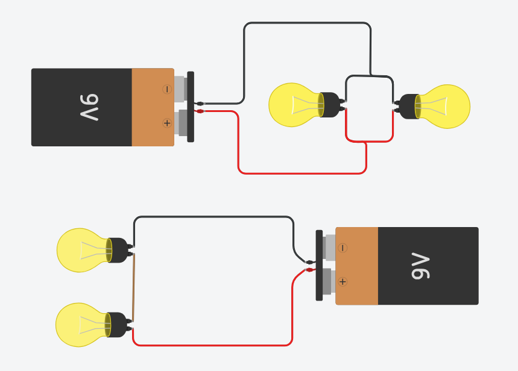
Fonte: imagem criada pelo autor no Autodesk Tinkercad
- Em série
- Mesma corrente \(I\)
- Tenesão de divide \(U = U_1 + U_2\)
- Em paralelo
- Mesma tensão elétrica \(U\)
- Corrente elétrica se divide \(I=I_1+I_2\)
Resistores
Resistência
Resistência é uma propriedade dos condutores de resistir a passagem da corrente.
- Todo condutor possui resistência.
- Quanto menor a resistência, melhor o condutor
- Objetos com alta resistência são chamados resistores, e utilizados para fins de:
- converter energia elétrica em calor;
- reduzir a tensão elétrica em algum trecho de um circuito.
Unidade de medida de resistência é o Ohm, símbolo \(\Omega\)
\[\Omega = \frac{V}{A}\]
Analogia sobre a relação entre Resistência \(\Omega\), tensão \(V\) e corrente \(A\).

Fonte: Elilopes, CC BY-SA 4.0 

Lei de Ohm
- resistores ôhmico:
- resistência constante;
- relação de proporcionalidade direta ente \(U\) e \(I\)
- resistores não ôhmicos:
- resistência não é constante;
- geralmente essa variação se deve ao aumento da temperatura.
Definção de resistência
\( R = \frac{U}{I} \)
Exemplo de resistor ohmico, a constante de proporcionalidade, que é a resistência do resistor, com valor de \( 5\Omega\).

Fonte: imagem criada pelo autor usando a plataforma Autodesk Tinkercad
Resistência equivalente a resistores em série
\[ R_s = R_1 + R_2\]
Ligação de dois resistores de \(5 \Omega\) em série.
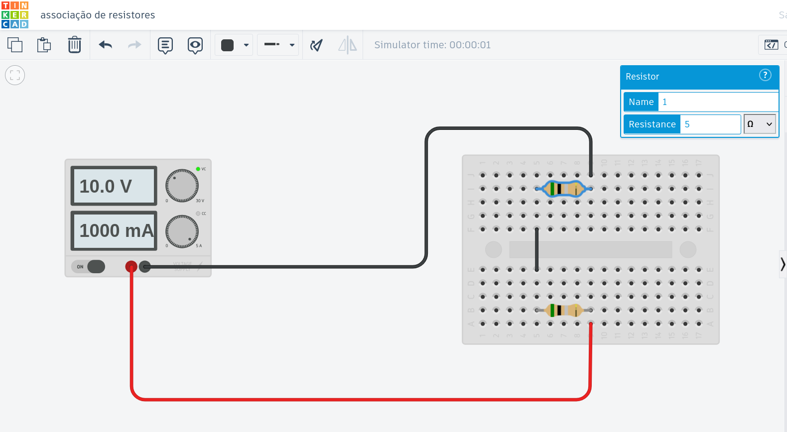
Fonte: imagem criada pelo autor usando a plataforma Autodesk Tinkercad
No caso mais geral (n resistores) teremos
\[R_s = R_1 + \dots R_n\]
Resistência equivalente a resistores em paralelo
\[ \frac{1}{R_p} = \frac{1}{R_1} + \frac{1}{R_2}\]
Ligação de dois resistores de \(5 \Omega\) em paralelo.
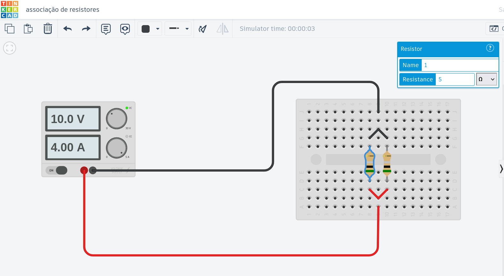
Fonte: imagem criada pelo autor usando a plataforma Autodesk Tinkercad
Par um caso geral, com n resistores em paralelo, teremos:
\[ \frac{1}{R_p} = \frac{1}{R_1} + \dots + \frac{1}{R_n}\]
Ligações mistas de resistores
Resistividade
Simulação Resistência em um Fio - phet.colorado.edu
\( R = \rho \frac{L}{A} \)
onde
- \(\rho \) é a resistividade e caracteriza o material condutor
- \(L\) é o comprimento do condutor
- \(A\) é a área do condutor
| Metal | Resistividade (Ω·m) |
|---|---|
| Prata | 1.59 × 10⁻⁸ |
| Cobre | 1.70 × 10⁻⁸ |
| Ouro | 2.44 × 10⁻⁸ |
| Alumínio | 2.82 × 10⁻⁸ |
| Tungstênio | 5.60 × 10⁻⁸ |
| Ferro | 9.71 × 10⁻⁸ |
| Platina | 10.6 × 10⁻⁸ |
| Chumbo | 22.0 × 10⁻⁸ |
| Mercúrio | 96.0 × 10⁻⁸ |
Capacitores
Simulação com capacitor de placas paralelas.

Fonte: imagem criada pelo autor usando a plataforma PHET Interactive Simulations
Descarga de associação de resistores (em série e em paralelo).
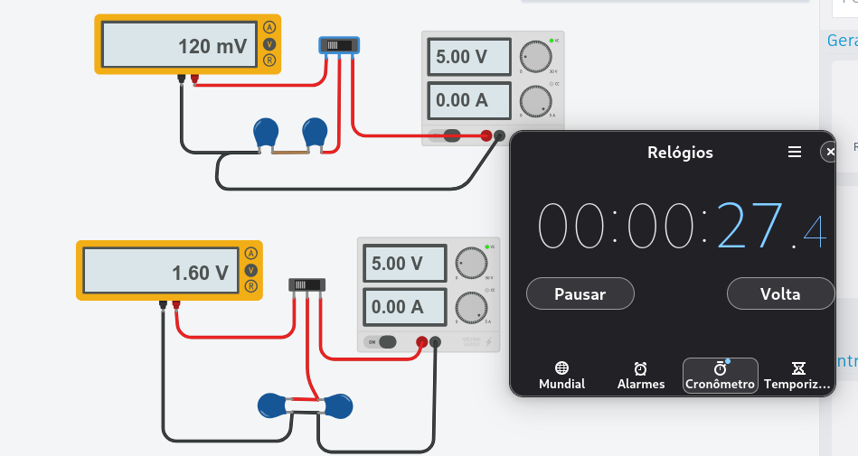
Fonte: imagem criada pelo autor usando a plataforma Projeto no Autodesk Tinkercad
Definição de Capacitância
A capacitância é a razão entre a carga armazenada em uma das placas e a diferença de potencial (tensão) entre elas.
Expressão geral:
\( C = \frac{Q}{V} \)
Unidade no SI:
Farad (F) = Coulomb / Volt (C/V)
Energia Armazenada em um Capacitor
A energia (potencial eletrostática) armazenada no campo elétrico do capacitor é dada pela relação entre carga e tensão.
Fórmulas equivalentes:
\( U = \frac{1}{2} Q V \)
\( U = \frac{1}{2} C V^2 \)
\( U = \frac{Q^2}{2C} \)
Associação de capacitores em Paralelo
- A tensão é a mesma em todos os capacitores.
- A capacitância equivalente é a soma das capacitâncias individuais.
Expressão:
\( C_P = C_1 + C_2\)
ou
\( C_P = C_1 + C_2 + C_3 + \dots + C_n \)
Associação de capacitores em Série
- A carga é a mesma em todos os capacitores.
- O inverso da capacitância equivalente é a soma dos inversos das capacitâncias individuais.
- Expressão:
\( \frac{1}{C_S} = \frac{1}{C_1} + \frac{1}{C_2} \)
ou
\( \frac{1}{C_{S}} = \frac{1}{C_1} + \frac{1}{C_2} + \frac{1}{C_3} + \dots + \frac{1}{C_n} \)
Outros componentes eletrônicos
Diodos

Diodo Emissor de Luz (LED)
Diodo Emissor de Luz (LED) – Fotografia.

Fonte: Wikimedia Commons,
CC BY-SA 3.0, via Wikimedia Commons


Diodo Emissor de Luz (LED) – Símbolo esquemático.

Fonte: Wikimedia Commons,
CC BY-SA 3.0, via Wikimedia Commons


Transistores


Indutores


Eletrônica digital
Simulação de controle de LED com arduino.

Fonte: imagem criada pelo autor usando a plataforma Autodesk Tinkercad
Programação de controle de LED com arduino.

Fonte: imagem criada pelo autor usando a plataforma Autodesk Tinkercad
Magnetismo e Eletricidade
Noções sobre força magnética
Todos nós já tivemos alguma experiência com imãs, e já experimentamos a atração magnética de alguma forma. Sabemos que dois imãs podem se repelir, ou se atrair, a depender das respectivas direções dos seus polos. Assim, há uma semelhança ao que acontece com a força elétrica: os opostos se atraem, e os semelhantes se repelem (pólos magnéticos, ou cargas elétricas, em cada caso).
Outra semelhança é o comportamento quanto à carga e à distância. Nesse caso, três forças fundamentais têm o mesmo comportamento:
I. A força gravitacional é
I.a) proporcional ao produto das massas
\( F \propto M_1 M_2 \)
I.b) inversamente proporcional ao quadrado da distância
\( F \propto \frac{1}{d^2} \)
Força gravitacional entre duas massas à 3,0 km de distância.
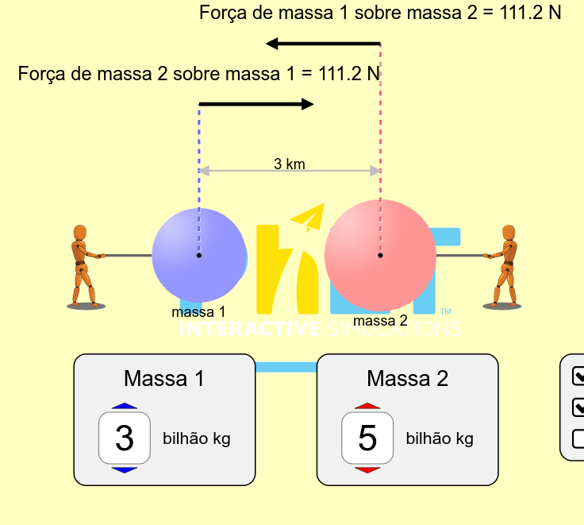
Fonte: criado pelo autor a partir da simulação Gravity Force Lab: Basics - PhET.
Força gravitacional entre duas massas à 6,0 km de distância.
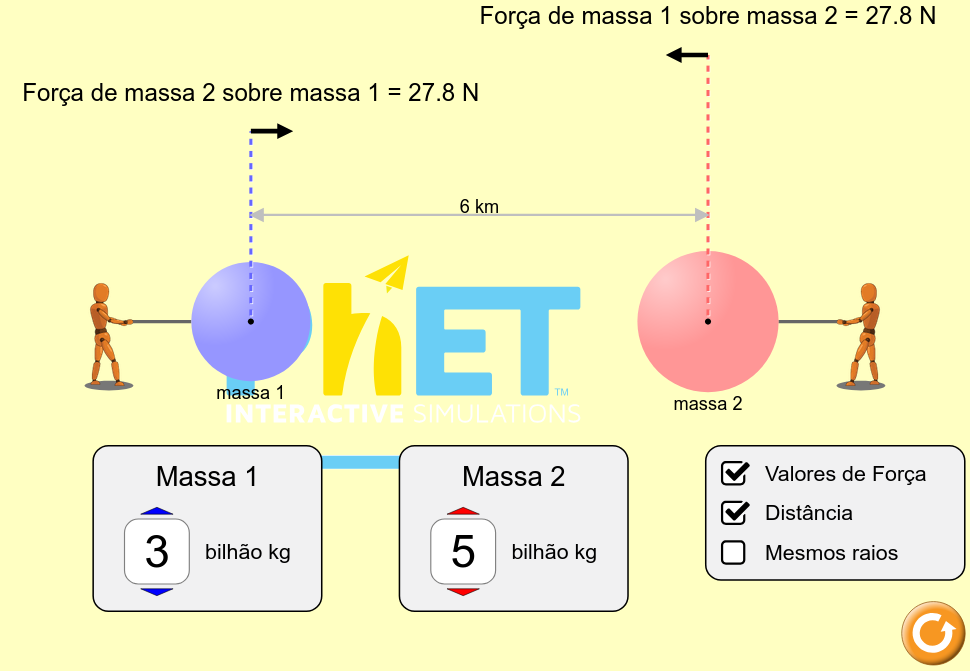
Fonte: criado pelo autor a partir da simulação Gravity Force Lab: Basics - PhET.
Ao dobrar a distância (de 3,0 km para 6,0 km), a força fica quatro vezes menor, o que confirma a dependência com o inverso do quadrado da distância.
II. A força eletrostática é
II.a) proporcional ao produto das cargas
\( F \propto Q_1 Q_2 \)
II.b) inversamente proporcional ao quadrado da distância
\( F \propto \frac{1}{d^2} \)
Força elétrica entre dois objetos à 4 cm de distância.

Fonte: criado pelo autor a partir da simulação Lei de Coulomb - PhET.
Força elétrica entre dois objetos à 2 cm de distância.
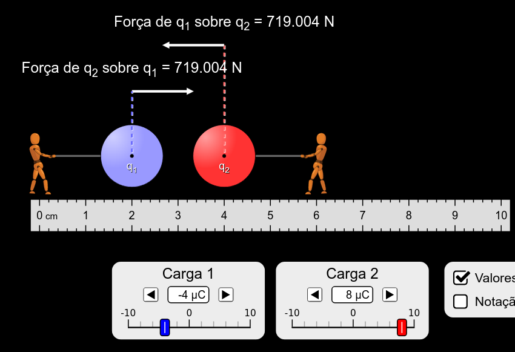
Fonte: criado pelo autor a partir da simulação Lei de Coulomb - PhET.
III. A força magnética é
III.a) proporcional ao produto das "cargas magnéticas"
\( F \propto m_1 m_2 \)
III.b) inversamente proporcional ao quadrado da distância
\( F \propto \frac{1}{d^2} \)
Mas, aqui, o que seria essa carga magnética? Ao começar a investigar isso, podemos também perceber uma diferença entre essa força e as anteriores.
Se você quebrar um ímã ao meio, tentando separar o polo sul do polo norte, você terá dois ímãs, mas cada um deles com seu polo sul e seu polo norte.
Esse comportamento pode ser expresso pela seguinte afirmação
Não existe monopolo magnético!
Ou seja, de forma mais simplista
Não é possível ter uma carga magnética (como um ímã) com apenas um polo (sul ou norte).
Ímãs e campo magnético
Um ímã é um corpo que possui dois polos, norte e sul, e que exerce força magnética sobre outros ímãs ou sobre materiais ferromagnéticos, como o ferro, o níquel e o cobalto. Uma bússola nada mais é do que uma pequena agulha imantada que se orienta na presença de um campo magnético.
O campo magnético (\( \vec{B} \)) é a região do espaço ao redor de um ímã (ou de uma corrente elétrica) onde ele pode exercer força magnética. Sua unidade de medida no SI é o tesla (\(T\)).
As linhas de campo magnético saem do polo norte e entram no polo sul, por fora do ímã, formando sempre linhas fechadas. Isso é consequência de não existir monopolo magnético.
Bússola próxima a um ímã permanente.

Fonte: criado pelo autor a partir da simulação Ímã e Bússola - PhET.
Bússola orientada pelo campo magnético da Terra.
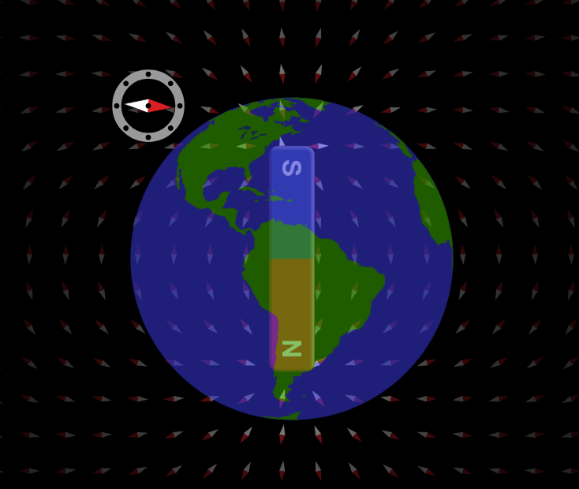
Fonte: criado pelo autor a partir da simulação Ímã e Bússola - PhET.
O campo magnético da Terra (campo geomagnético) é o que orienta a agulha da bússola. O polo norte geográfico está próximo do polo sul magnético da Terra, e é por isso que o polo norte da agulha aponta nessa direção.
Magnetismo e corrente elétrica
Em 1820, o físico dinamarquês Hans Christian Oersted observou que a agulha de uma bússola era desviada quando colocada próxima a um fio percorrido por corrente elétrica. Esse experimento mostrou que cargas elétricas em movimento geram campo magnético.
Toda corrente elétrica produz um campo magnético ao seu redor!
Essa descoberta unificou a eletricidade e o magnetismo, dando origem ao eletromagnetismo. Um fio enrolado em forma de hélice (bobina ou solenoide) produz, no seu interior, um campo magnético semelhante ao de um ímã em barra.
Corrente elétrica gerando campo magnético.
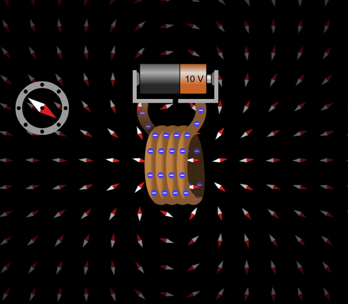
Fonte: criado pelo autor a partir da simulação Ímãs e Eletroímãs - PhET.
Bobina ligada a uma pilha e seu campo magnético.

Fonte: criado pelo autor a partir da simulação Ímãs e Eletroímãs - PhET.
Campo magnético no interior de uma bobina com 2 voltas.
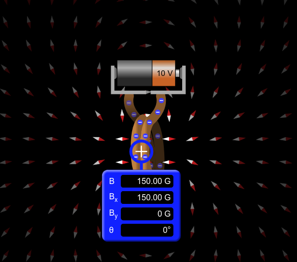
Fonte: criado pelo autor a partir da simulação Ímãs e Eletroímãs - PhET.
Campo magnético no interior de uma bobina com 4 voltas.
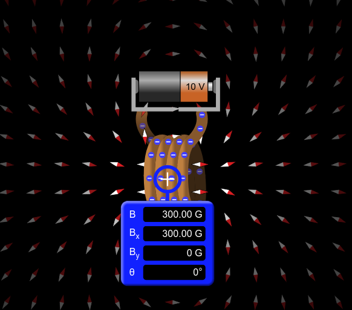
Fonte: criado pelo autor a partir da simulação Ímãs e Eletroímãs - PhET.
Comparando as duas últimas figuras (mesma corrente e mesmo núcleo), vemos que, dobrando o número de voltas, o campo magnético no interior da bobina também dobra. Assim, o campo é proporcional ao número de voltas da bobina.
Motor elétrico
O motor elétrico é um dispositivo que converte energia elétrica em energia mecânica (movimento), aproveitando a força que um campo magnético exerce sobre um condutor percorrido por corrente elétrica.
Em um motor, a corrente elétrica percorre uma espira imersa em um campo magnético. A força magnética sobre os lados da espira produz um torque, que a faz girar.
Os motores de corrente contínua (CC) são alimentados por tensão contínua, como pilhas e baterias. Já os motores de corrente alternada (CA) são alimentados pela rede elétrica, cuja tensão varia periodicamente, o que mantém o motor girando de forma contínua.
Motor elétrico – Princípio de funcionamento.

Fonte: Wikimedia Commons, domínio público, via Wikimedia Commons.


Indução magnética
Assim como uma corrente elétrica gera um campo magnético, o contrário também acontece: um campo magnético variável pode gerar corrente elétrica em um circuito. Esse fenômeno é chamado de indução eletromagnética e foi descoberto por Michael Faraday em 1831.
\begin{equation} \varepsilon = -\frac{\Delta \Phi_B}{\Delta t} \end{equation}Lei de Faraday: a força eletromotriz (\( \varepsilon \)) induzida em um circuito é proporcional à taxa de variação do fluxo magnético (\( \Phi_B \)) que o atravessa.
O sinal negativo é consequência da Lei de Lenz: a corrente induzida sempre se opõe à variação do fluxo magnético que a originou.
Para explorar esse fenômeno, veja a simulação Laboratório Eletromagnético de Faraday - phet.colorado.edu.
Gerador elétrico
O gerador elétrico é o dispositivo que converte energia mecânica em energia elétrica, funcionando como o oposto do motor. Ao girar uma espira (ou bobina) dentro de um campo magnético, o fluxo magnético que a atravessa varia e, pela Lei de Faraday, surge uma força eletromotriz induzida — ou seja, uma corrente elétrica.
Motor: energia elétrica \(\rightarrow\) energia mecânica.
Gerador: energia mecânica \(\rightarrow\) energia elétrica.
Assim, motores e geradores são essencialmente o mesmo dispositivo, operando em sentidos opostos de conversão de energia.
As figuras abaixo mostram como a Lei de Indução de Faraday explica o funcionamento de um gerador. No exemplo ilustrado, a rotação do ímã varia o campo magnético que atravessa a bobina, gerando uma tensão elétrica medida pelo voltímetro. Como o ímã gira continuamente, a tensão assume valores ora positivos, ora negativos: esse é um exemplo de gerador de corrente alternada.
Giro do ímã gerando tensão elétrica positiva (do ponto de vista do voltímetro acoplado).
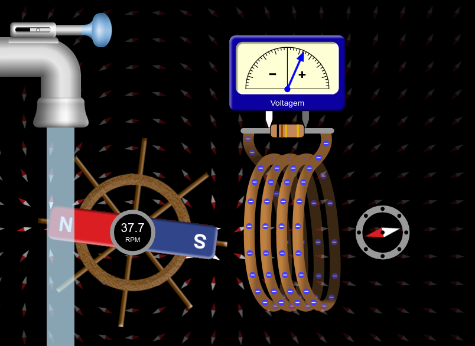
Fonte: criado pelo autor a partir da simulação Laboratório Eletromagnético de Faraday - PhET.
Giro do ímã gerando tensão elétrica negativa (do ponto de vista do voltímetro acoplado).
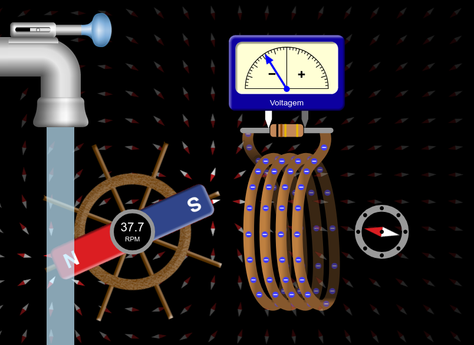
Fonte: criado pelo autor a partir da simulação Laboratório Eletromagnético de Faraday - PhET.
Materiais magnéticos
Quanto ao comportamento na presença de um campo magnético, os materiais podem ser classificados em:
- Ferromagnéticos: são fortemente atraídos por ímãs e podem se tornar ímãs permanentes. Exemplos: ferro, níquel, cobalto e suas ligas.
- Paramagnéticos: são fracamente atraídos por ímãs. Exemplos: alumínio e platina.
- Diamagnéticos: são fracamente repelidos por ímãs. Exemplos: cobre, água e bismuto.
- Ímãs permanentes
- Neodímio-Ferro-Boro (NdFeB)
- Samário-Cobalto (SmCo)
- Eletroímãs
- Ímãs temporários produzidos pela passagem de corrente elétrica em uma bobina, geralmente com um núcleo de ferro.
Resumo
- Comparação entre forças: gravitacional, elétrica e magnética
- Campo magnético
- Origem do magnetismo
- Movimento da carga elétrica gerando magnetismo
- Lei de Biot-Savart
- Lei de Ampère
- Magnetismo intrínseco das partículas elementares: SPIN
- Movimento da carga elétrica gerando magnetismo
- Magnetismo gerando corrente elétrica
- Lei da indução de Faraday
- Motor elétrico
- Gerador elétrico